Tidy and beautiful
Visualizing Bayesian models with xarray and ArviZ

|
| Colin Carroll, Freebird, Inc |
| PyData NYC, October 17, 2018 |
- What is Bayesian inference?
- What is ArviZ?
- What can I learn from ArviZ?
What is Bayesian Inference?
$$ P(\theta | X) = \frac{P(X | \theta) P(\theta)}{P(X)} $$
$$ P(\text{slope, intcpt.} | x, y) = \frac{P(x, y | \text{slope, intcpt.}) P(\text{slope, intcpt.})}{P(x, y)} $$
$$ y = \text{slope} \cdot x + \text{intercept} $$
Point Estimates


Uncertainty
Uncertainty


Uncertainty

What is
 ?
?
Visualization
x = np.random.rand(200)
y = np.random.rand(200)
data = {
'x': x,
'y': y,
'z': x - y,
}
Visualization
az.plot_density(...)
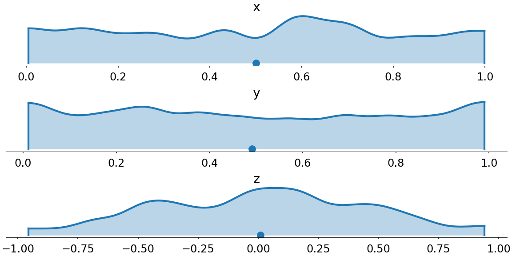
Visualization
az.plot_pair(...)Visualization
az.plot_forest(...)
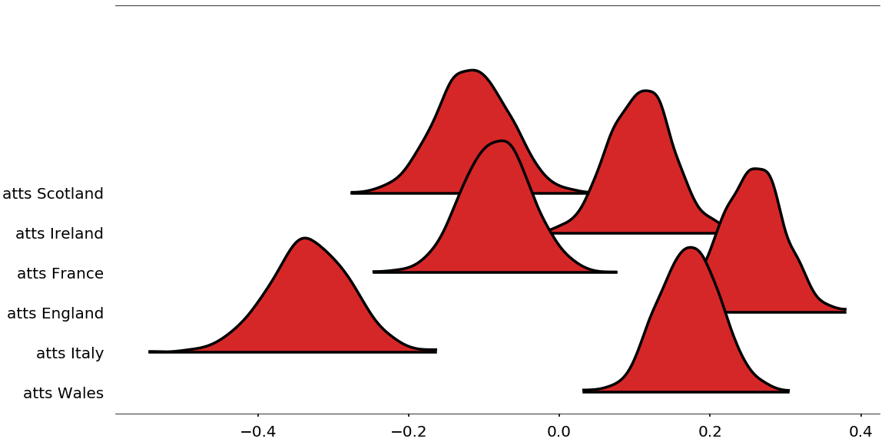
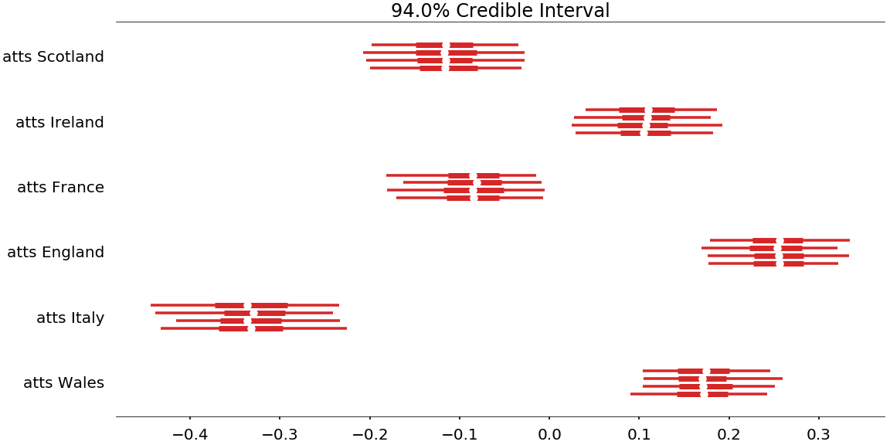
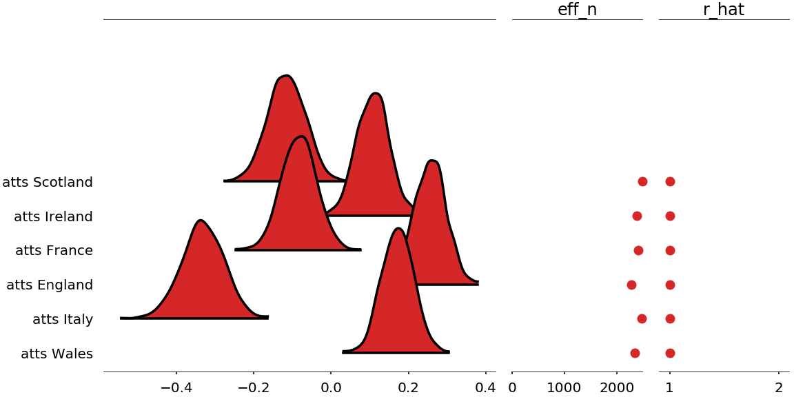
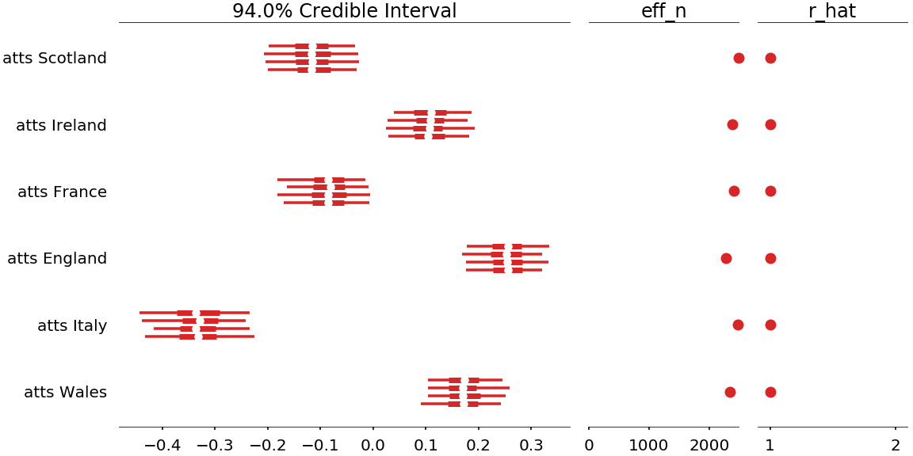
Visualization
az.plot_joint(...)| 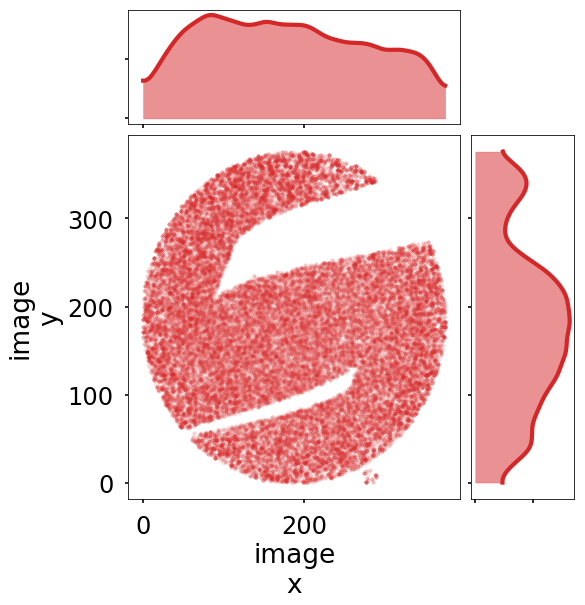 |
Diagnostics
- Does the model fit the data?
- Does the algorithm fit the model?
az.load_arviz_data('centered_eight')
az.load_arviz_data('non_centered_eight')Diagnostics
az.plot_trace(...)
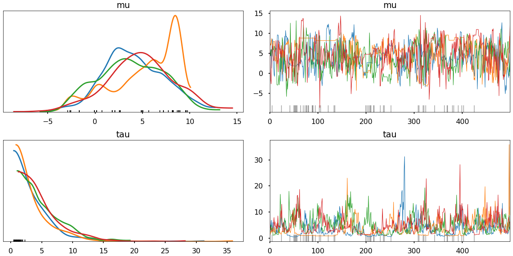
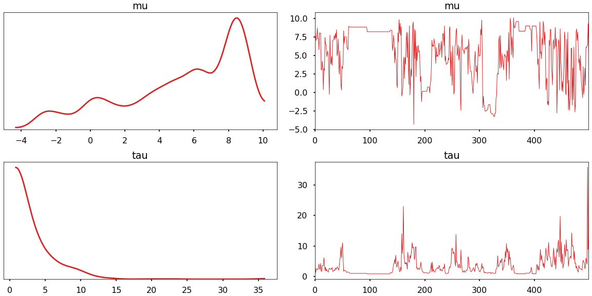
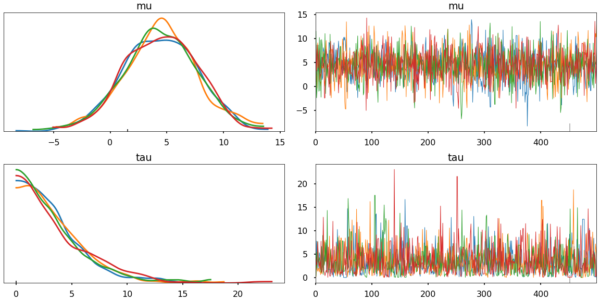
Diagnostics
az.plot_energy(...)
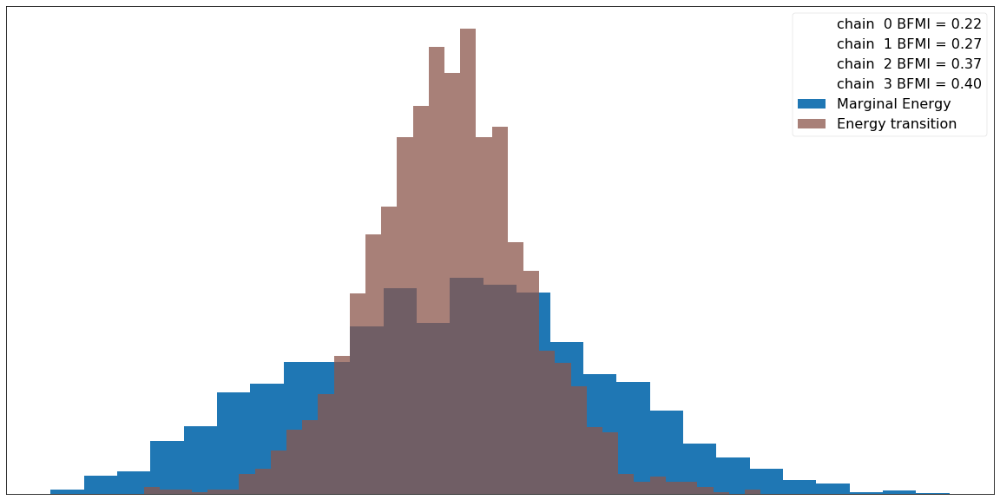
Diagnostics
az.plot_pair(..., divergences=True)
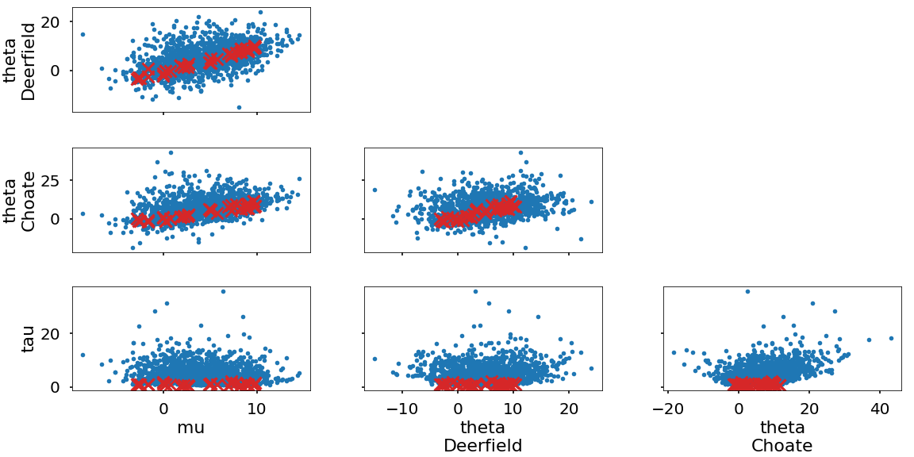
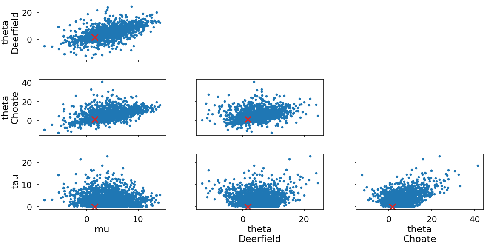
Diagnostics
az.plot_parallel(...)
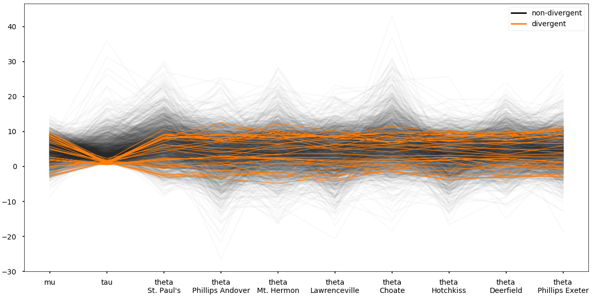
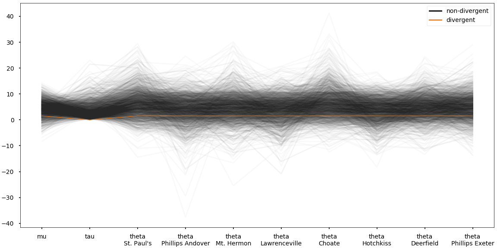
Diagnostics
az.summary(...)| mean | sd | mc error | hpd 3% | hpd 97% | eff_n | r_hat | |
|---|---|---|---|---|---|---|---|
| mu | 4.52 | 3.31 | 0.09 | -1.27 | 10.76 | 333.0 | 1.00 |
| tau | 4.44 | 3.37 | 0.34 | 0.75 | 10.38 | 71.0 | 1.05 |
| mean | sd | mc error | hpd 3% | hpd 97% | eff_n | r_hat | |
|---|---|---|---|---|---|---|---|
| mu | 4.23 | 3.41 | 0.05 | -2.23 | 10.68 | 1918.0 | 1.0 |
| tau | 3.70 | 3.34 | 0.05 | 0.00 | 9.61 | 1291.0 | 1.0 |
What is the goal?
How are Uncertainty Estimates Stored?
| Library | Methods on fit object | Favorite method name | Can you save? | Can you pickle? |
|---|---|---|---|---|
| PyMC3 | 96 | _old_theano_config | Sort of | Yes |
| PyStan | 46 | module_bytes | No | Yes, with model |
| emcee | 59 | _propose_stretch | No | Yes |
| Pyro | 42 | _abc_negative_cache_version | No | If you delete some things |
We want pandas!
...high-dimensional pandas!

xarray
Inference Data
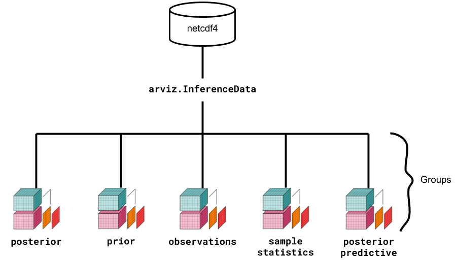Inference Data
> az.load_arviz_data('centered_eight')
Inference data with groups:
> posterior
> sample_stats
> posterior_predictive
> prior
> observed_dataInference Data
> centered_eight.posterior
Dimensions: (chain: 4, draw: 500, school: 8)
Coordinates:
* chain (chain) int64 0 1 2 3
* draw (draw) int64 0 1 2 3 4 5 6 7 8 ... 496 497 498 499
* school (school) object 'Choate' 'Deerfield' ... 'Mt. Hermon'
Data variables:
mu (chain, draw) float64 ...
theta (chain, draw, school) float64 ...
tau (chain, draw) float64 ...
Attributes:
created_at: 2018-10-05T15:28:15.577753
inference_library: pymc3
inference_library_version: 3.5What does ArviZ work with?
az.from_pystan(...)
az.from_pymc3(...)
az.from_emcee(...)
az.from_pyro(...)
az.from_cmdstan(...)
# works for all the above, and for
# numpy arrays and dictionaries
az.convert_to_inference_data(...)Help!
az.load_arviz_data('...')Thank You!
pip install arviz- github.com/arviz-devs/arviz
- arviz-devs.github.io/arviz/
- @colindcarroll
- Slides: colcarroll.github.io/arviz_pydata_nyc
- Notebook